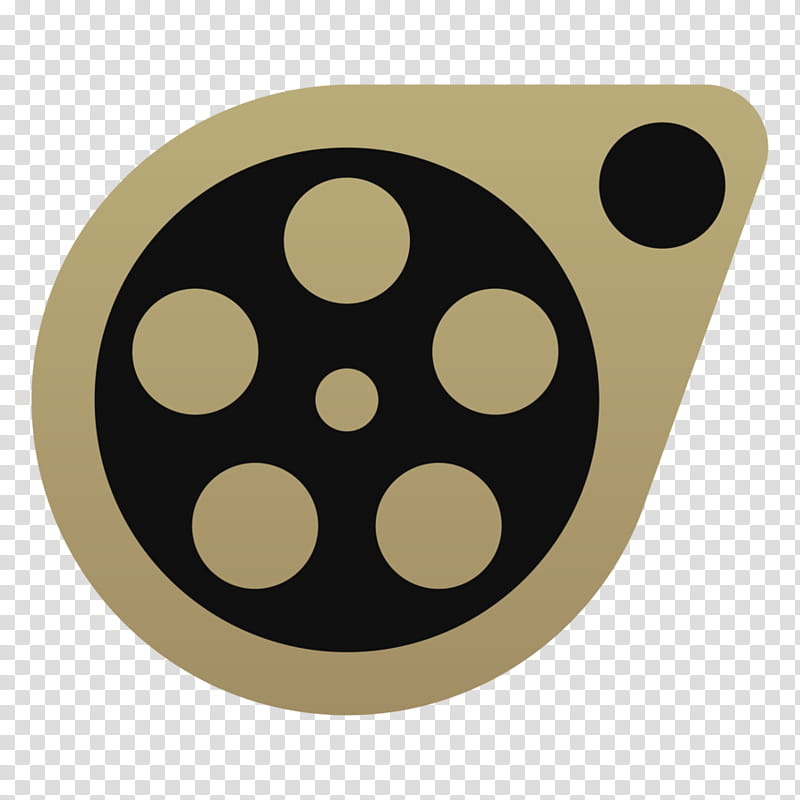
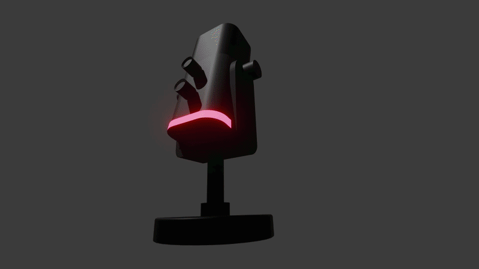
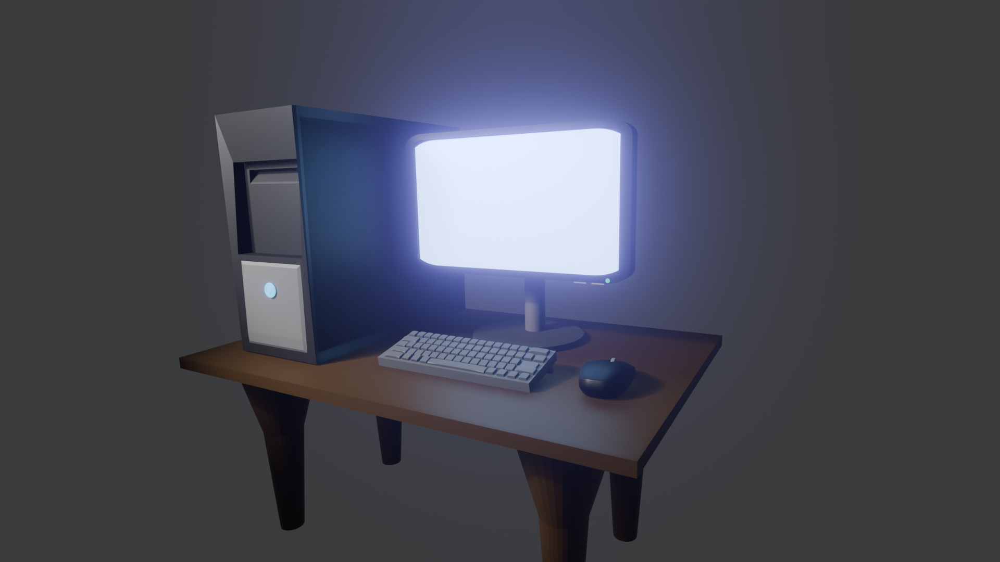
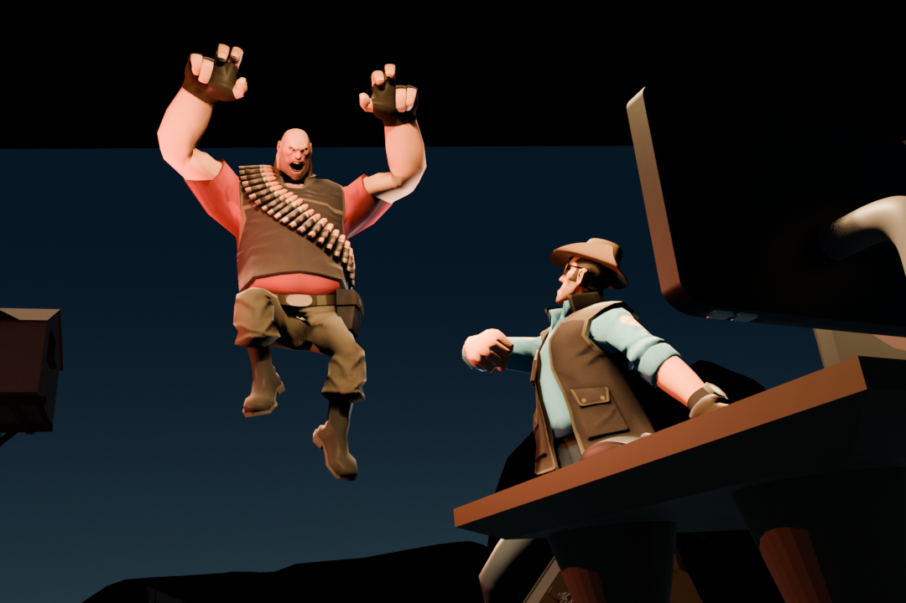
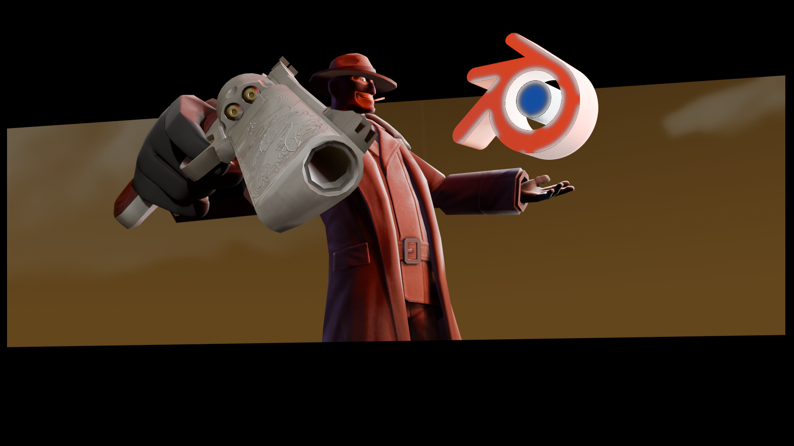

Welcome to my 3D & Animation section. Below you can check out my blender models with photoshop editing included!
This is my youtube channel where I animate and show timelapses of models/graphics. I started out with SourceFilmmaker to get started learning animation and it's fundamentals.


